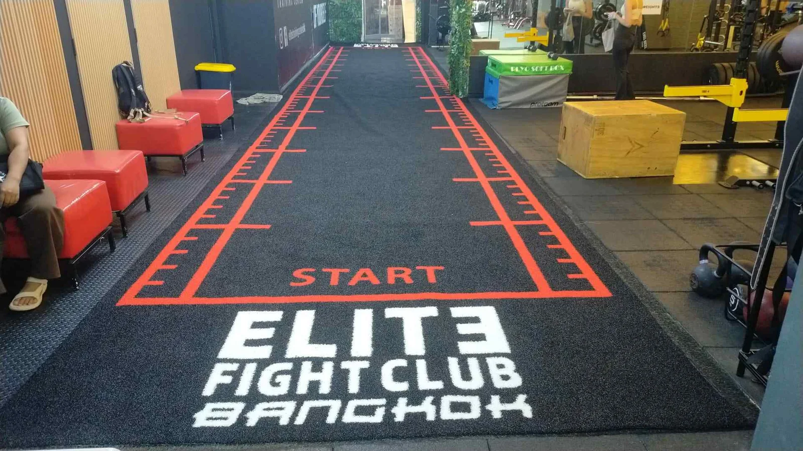
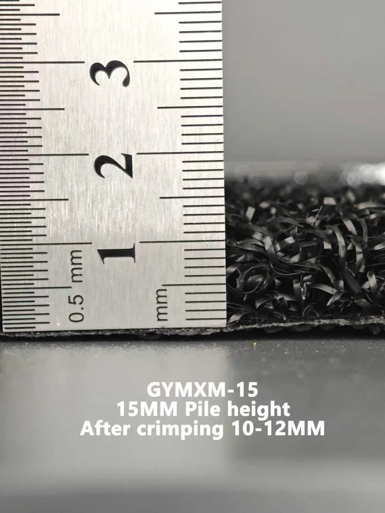
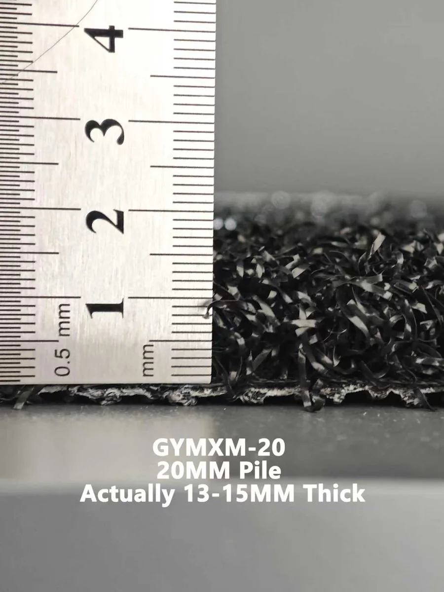
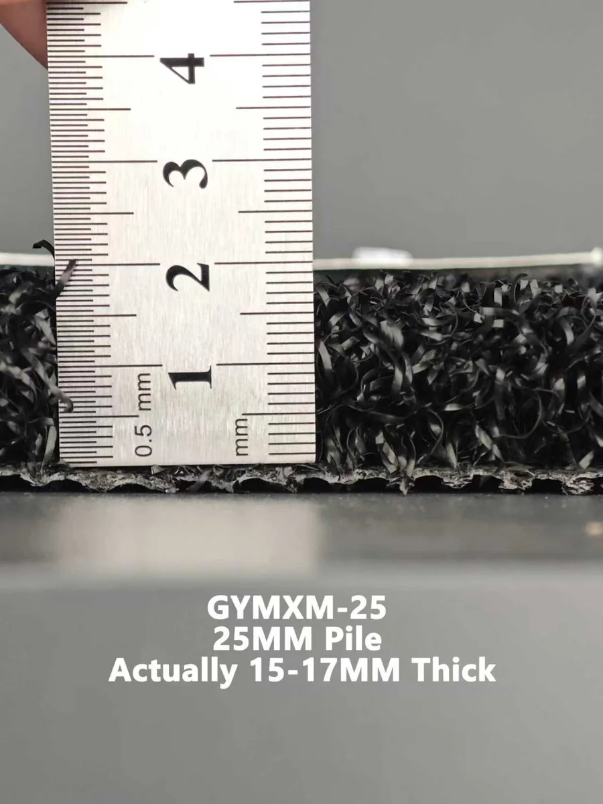
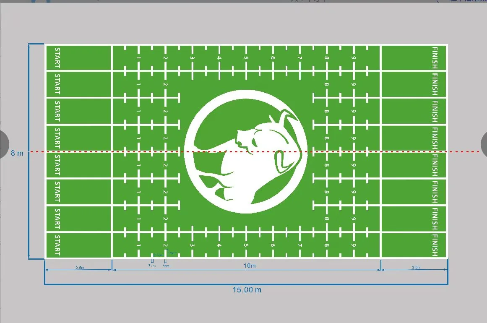
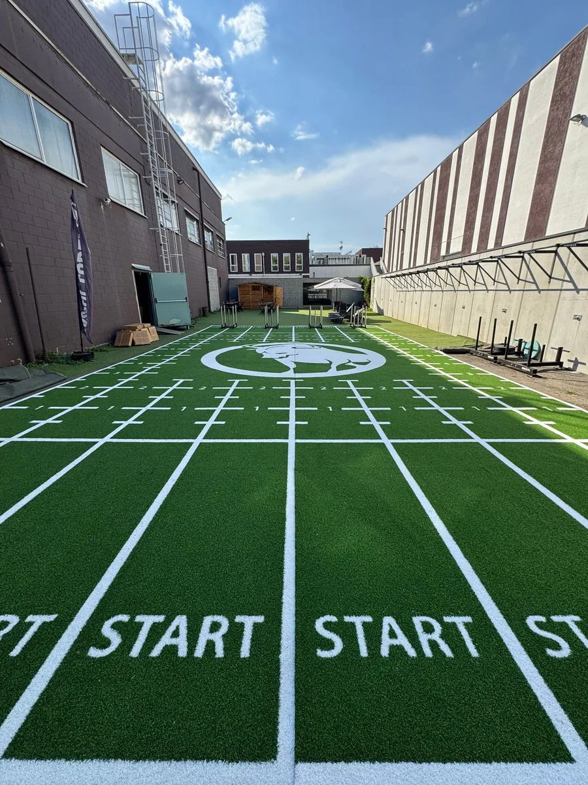
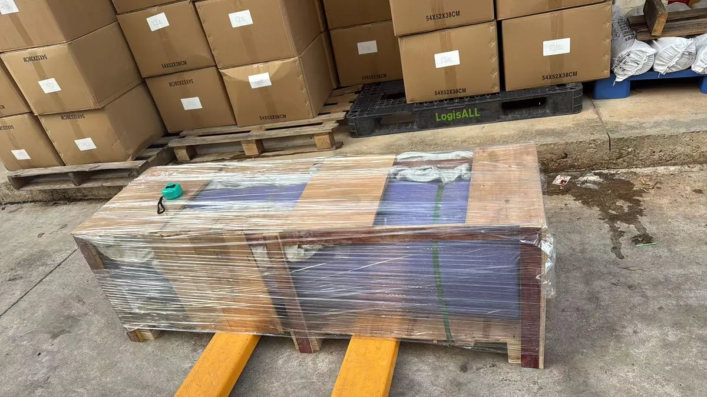

15mm vs 20mm vs 25mm Gym Turf: Pile Height Guide

Short Answer
For a commercial sled lane, 15mm gym turf is usually the best starting point. It supports frequent pushing, pulling, sprinting and lunging while remaining relatively easy to clean and cost-effective. Choose 20mm when you want a middle ground, and consider 25mm mainly when added visual depth or a softer feel matters more than minimum weight and maintenance.
Why Pile Height Matters—but Does Not Decide Everything
Sled performance is created by a system: yarn, density, backing, installation, pile direction, sled feet, load and maintenance all matter. A 25mm turf is therefore not automatically more durable or harder to push than a 15mm turf. Testing a representative sample with the buyer's actual sled is more useful than relying on pile height alone.
For the UMAX commercial gym turf construction discussed here, the 15mm, 20mm and 25mm options use the same 100% PE yarn, 5,500 dtex, stated density and PP + SBR backing. UMAX's practical project experience has not shown a clearly noticeable resistance difference based on pile height alone when the other construction variables remain the same. This is a field observation, not a controlled laboratory result.
15mm vs 20mm vs 25mm Gym Turf: Quick Comparison
| Decision point | 15mm gym turf | 20mm gym turf | 25mm gym turf |
|---|---|---|---|
| Best starting use | Frequent sled work, sprints, lunges and functional classes | Mixed-use projects wanting a middle profile | Projects prioritizing visual depth, branding or a softer feel |
| UMAX production status | Standard direction | Made to project requirement | Made to project requirement |
| Approx. total product weight | 3.5 kg/m² | 4.5 kg/m² | 5.5 kg/m² |
| Cleaning | Easiest of the three | Moderate | Requires more attention than 15mm |
| Roll handling | Lightest | Heavier | Heaviest |
| Price direction | Usually the most economical | Higher than 15mm | Highest of the three |
| Sled resistance | Must be sample-tested; height alone may not create a meaningful change | Must be sample-tested | Must be sample-tested |
| UMAX recommendation | Best value for most high-frequency commercial lanes | Useful middle option | Select for a specific project reason, not because “thicker is better” |
The weights above are current supplier reference values: 15mm is approximately 3.5 kg/m², with about 1 kg/m² added for each additional 5mm of pile. Confirm final tolerance and roll weight on the project quotation before planning transport or installation.
Nominal Pile Height Is Not the Same as Visible Height
The product name and a casual ruler reading may not match exactly. Synthetic gym turf yarn is textured and crimped rather than standing perfectly straight. The result also changes with sample relaxation, compression, ruler position and whether the yarn is straightened.



These photos are explanatory samples, not a substitute for the approved technical sheet, production tolerance and pre-production sample for a specific order. Buyers should also avoid using “pile height,” “total thickness” and “visible height” as interchangeable terms.
When 15mm Is the Best Choice
For most commercial facilities, 15mm is the practical default for repeated sled work, sprint drills, lunges, carries and functional classes. Its lower profile is easier to vacuum and inspect, while lower product weight can simplify roll handling and freight.
UMAX generally recommends 15mm for high-frequency sled training because it meets the functional requirement without paying for height that may not improve the exercise. The yarn, backing, seam plan, adhesive and sled interface still need verification.
When 20mm Makes Sense
The 20mm option is a middle choice for mixed functional zones that want more visual body than 15mm without the full weight and cost direction of 25mm. If the goal is purely high-frequency sled use, ask what the extra height is solving. Because 20mm is produced to project requirements, approve the physical sample and final specification before bulk production.
When 25mm Is Appropriate
Choose 25mm for a clear design or user-experience reason, such as more visual depth, a large branded area or a fuller feel. It is a producible option, but compared with 15mm it is heavier, normally costs more and needs more cleaning attention. UMAX sees “choosing 25mm because thicker must be better” as the most common pile-height mistake. For a sled lane, compare samples before paying for the extra height.
Five Factors to Check Beyond Pile Height
1. Yarn and construction
Confirm whether the options use the same yarn, dtex and density. In this comparison, all three use 100% PE, 5,500 dtex and the same stated density. The final density unit and tolerance belong on the order-specific technical sheet.
2. Backing and installation
The reference construction uses PP + SBR backing and glue-down installation. The substrate must be flat, clean, dry, stable and compatible with the selected adhesive.
3. Sled feet and load
Different skid materials and edge shapes interact with turf differently. Test the actual sled empty, at a normal load and at a heavier working load.
4. Pile direction
Turf has a directional grain. Test both directions and keep production rolls oriented consistently during installation.
5. Traffic and maintenance
Foot traffic, chalk, dust and moisture affect the lane. Plan vacuuming, spot cleaning and seam and edge inspections.
A Practical Sample Test Before You Order
When the decision is uncertain, request representative samples and use the same sled and test method for each.
- Place each sample on the intended subfloor or a comparable rigid base.
- Record the sled, skid material and travel direction.
- Test empty, normal and heavier working loads over the same distance.
- Compare start-up force, consistency, movement and fiber recovery.
- Check for wrinkling, excessive shedding or unstable resistance.
- Approve the final color, markings, backing and specification in writing.
From Custom Layout to an Installed Training Area
Lane width, traffic flow, start and stop zones, logos, roll direction and seams should be resolved before production. The authorized Italy project below began with a 15m × 8m layout and developed into a custom outdoor training area with multiple marked lanes.


UMAX Commercial Gym Turf
The UMAX gym turf range can be configured around the training program and site rather than forcing one height onto every project.
| Product item | Current project reference |
|---|---|
| Yarn material | 100% PE |
| Pile-height options | 15mm standard direction; 20mm and 25mm available to project requirement |
| Dtex | 5,500 |
| Backing | PP + SBR |
| Standard width | 2m |
| Custom width | Supported, subject to project confirmation |
| Reference maximum roll length | Up to 25m; final length should account for roll weight and shipping |
| Customization | Size, color, logos, numbers and training markings |
| Installation | Glue-down on a properly prepared compatible substrate |
| Application direction | Indoor or outdoor projects, subject to site, adhesive, drainage and exposure review |
| Reference sample time | About 3 days after details are confirmed |
| Reference production time | About 10 days after artwork, specification and order details are confirmed |

Roll length, total weight and packing should be planned together for international delivery.Production and transit times are planning references, not delivery guarantees. Confirm the final specification, tolerance, packing, installation system and testing documents for each order.
Planning a sled lane? Tell UMAX your sled type, training frequency, lane size and destination for a pile-height recommendation, custom layout and quotation.
Get a Turf RecommendationFrequently Asked Questions
What pile height is best for sled turf?
For most commercial sled lanes, 15mm is a strong starting point because it supports frequent training, is easier to clean and usually offers the best value. Test it with the actual sled and loads before ordering.
Does thicker gym turf create more sled resistance?
Not necessarily. Yarn, density, backing, pile direction, sled skids, load and installation can influence resistance more than pile height alone. UMAX has not observed a clearly noticeable difference among these three otherwise similar constructions, but buyers should run their own sample test.
Why does a 15mm sample look closer to 10–12mm on a ruler?
The nominal pile yarn is crimped and textured rather than perfectly upright. Visible height can also change with compression, relaxation and measurement method. Use the order-specific technical sheet and approved sample to define acceptance.
Can 20mm and 25mm turf really be produced?
Yes. For the UMAX commercial gym turf construction discussed here, 20mm and 25mm are producible project options. They should be confirmed through a quotation, physical sample and approved specification.
Can this turf be used outdoors?
The PE product direction can be considered for indoor and outdoor projects, but outdoor suitability is a complete-system decision. UV exposure, temperature, drainage, substrate, adhesive, seams and local conditions must be reviewed before approval.
Should commercial sled turf be glued down?
For repeated commercial sled use, a correctly specified glue-down installation is the reference approach for this product. Subfloor preparation, compatible adhesive, curing time and edge detailing are essential.